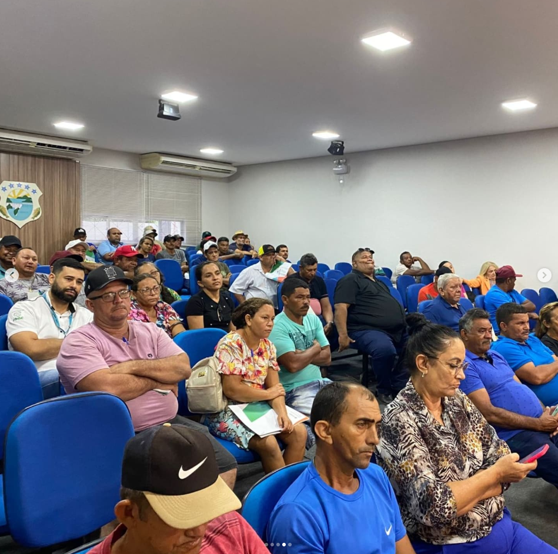
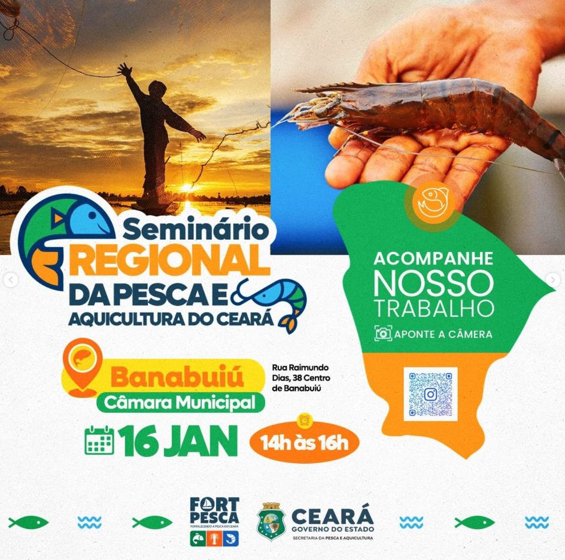
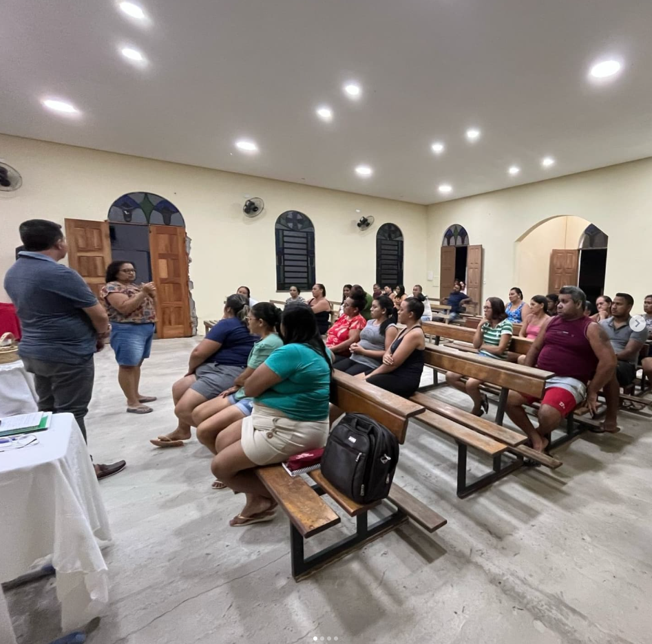
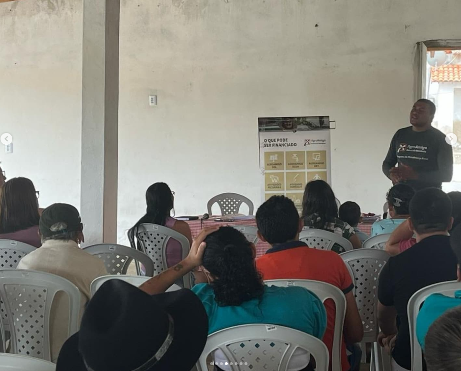
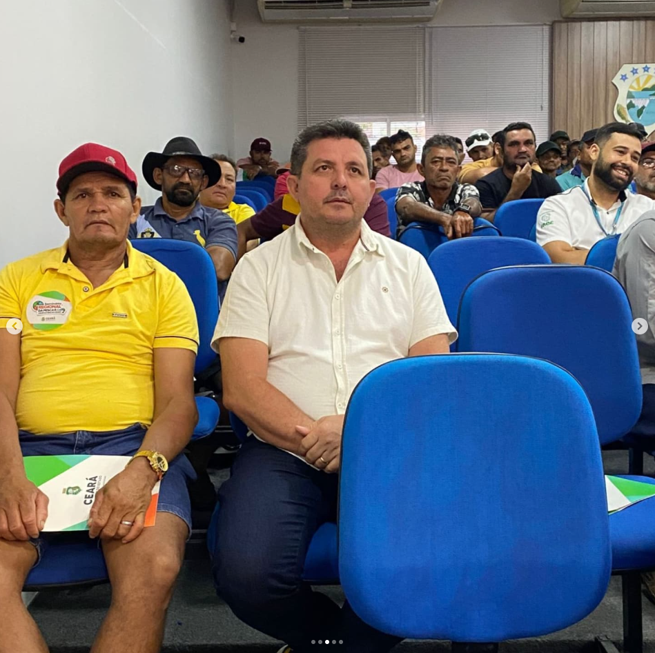
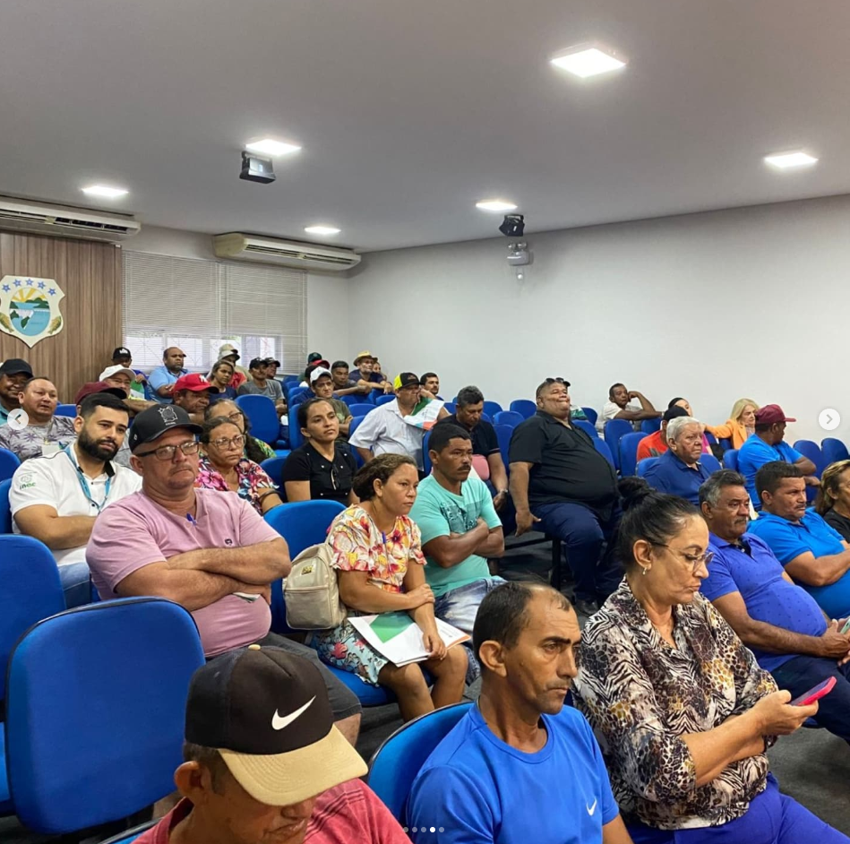
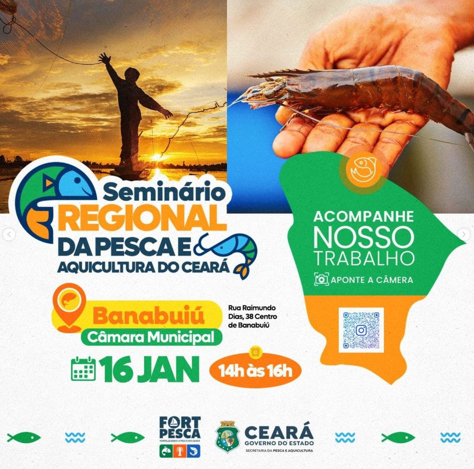
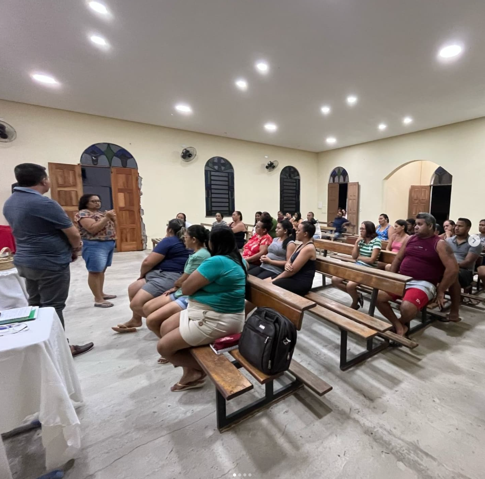
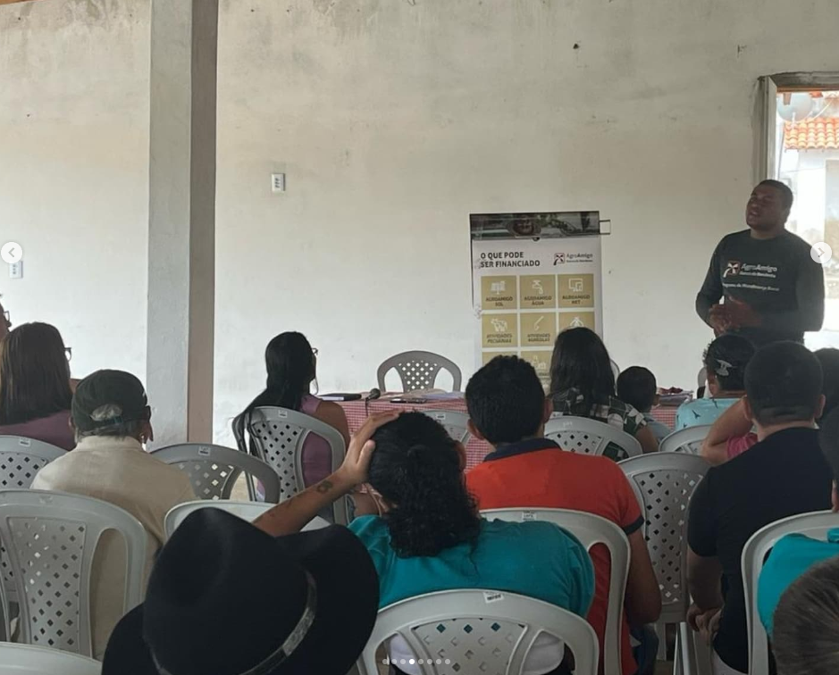
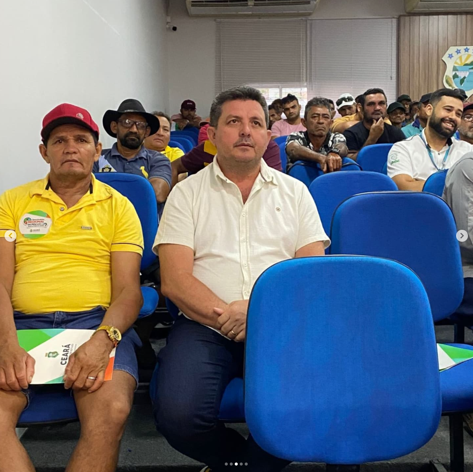

Quem Somos?
🌾🎣🎨 Bem-vindos à Associação Comunitária de Pedras Brancas! 🌾🎣🎨
Nosso objetivo é unir agricultores, pescadores, piscicultores,
estudantes, desportistas, artesãos e artistas em um só lugar,
promovendo o desenvolvimento sustentável e o fortalecimento da nossa
comunidade.
tradições, apoiando iniciativas que valorizam a cultura local,
incentivam o empreendedorismo e promovem a educação e o esporte.
Juntos, construímos um futuro melhor, baseado na solidariedade, no
respeito ao meio ambiente e na valorização dos talentos de cada um.
Venha fazer parte dessa jornada e ajude a transformar Pedras Brancas
em um exemplo de união e progresso!
📸 Veja Voce Mesmo


 









Presidente
O presidente da Associação de Agricultores, Pescadores, Psicultores,
Estudantes, Desportistas, Artesãos e Artistas de Pedras Brancas-
(ACAPPEDAAPB)
O Senhor Francisco Filho de Oliveira Rêgo, esteve
participando na sede do Município de Banabuiú do Seminário Regional da
Pesca e Aquicultura do Ceará, onde esteve presente o Secretário da
Pesca e Aquicultura do Estado do Ceará Oriel Filho. Na oportunidade
ele representou a Instituição, onde foi debatido sobre políticas
públicas que possa fortalecer os pescadores locais.